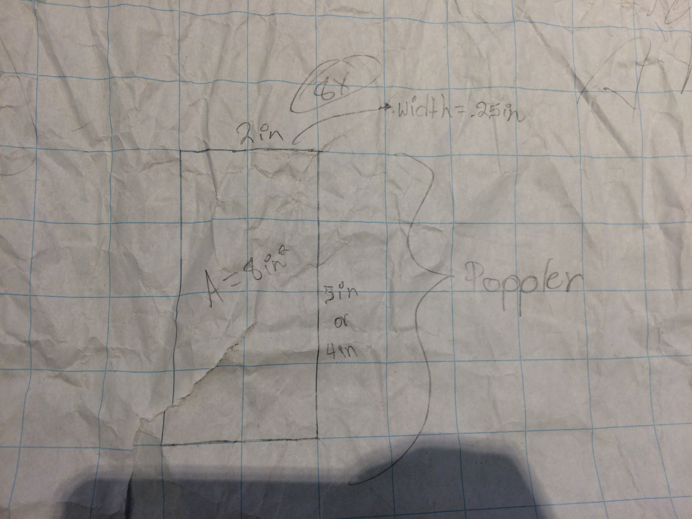
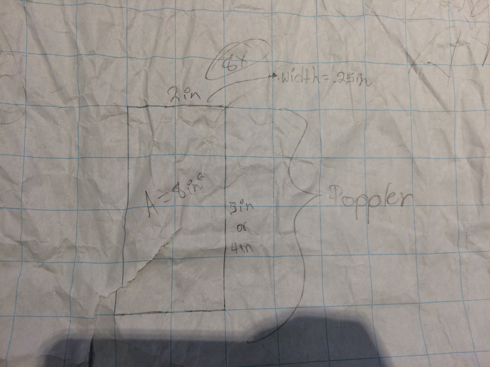

Lamp Module
Thanks to the lamp project I learned many new skills, such as soldering woodworking, metalworking, etc. There were various complications throughout the whole process which changed my end product (The lamp did not come out as I originally planned it). In my original design there were diming features, the lamp was easily portable and meant to be placed on a surface; But thats not how the final design came out. The final product has gaps between its walls, hangs from a ceiling, and has no diming features. My lamp did not come out how I originally planned but I am happy with how it came out. I now Have to clean it up a bit and sand off the excess glue.
In ilab our current module is designing and creating a lamp. The inspiration for my lamp is lighthouses. My lamps is very simple compared to my fellow alumni but it is still elegant thanks to its octagonal shape and the two woods that go into it, which makes the colors pop. In my lamp I am incorperating woodworking, saudering and metalwork. The hardest part of the project so far has been drilling into the wood evenly so that all 16 pieces of wood can fit together perfectly.


 


Project Description
For the first trimester of Ilab I will be working on screenprinting. I want to learn how to screenprint because I have many clothing ideas and just knowing how to screenprint is a very intresting skill. Another reason I want to learn how to screenprint is to start my own clothing line and potentially company. I will first screenprint on a t-shirt and then move on to more complex garments. I will use a vector program such as adobe premiere and or photoshop in order to make a graphic design to screenprint. I believe this will be the hardest part of my screenprinting process because I have no real prior expierience on adobe suite.
10/23/17
This week I ordered my 2 t-shirts, blue and red screenprinting ink, photo emulsion and sensitizer. This week I went designed many breand names and logos by hand and used different fonts online in order to help design my intial logo. After finding a font I liked online I screenshoted it and put it into photoshop where I remade/retouched it and turned it into a vector so that I could print it any size I want and screenprint it. Using photoshop was really hard for me because I had no real prior expirience on it but luckily a fellow classmate helped and taught me.
10/16/17
Supplies
- Transparencies with art on it
- Squeegee
- Frame
- Emulsion
- Sensitizer
- Glass
- Ink
Steps
- Add water to sensitizer then mix it with the emulsion
- Pour small amount onto screen
- Use squeegee until ink is spread evenly on the screen
- Dry emulsion in the dark
- When dry, put artwork backwards on the back of the screen
- Tape art in place then put glass on it
- Put a very bright light on it for 30-45min or outside while the sun is out (But it does not work as well)
- Use a little water and soft toothbrush to take off the unexposed emulsion
- Use hose but be very careful
- Iron shirt and then layout
- Place design were it should be printed
- Put ink over the design and put especially a lot were there is more to fill
- Use squeegee to spread the ink and make it even
- Clean off the ink from the screen
- Throw shirt in dryer for 5 min.
- Clean screen with emulsion remover
- Spread small amount on the sides of the screen
- Hose to wash out the emulsion until the screen is clean (Hose gently)
Tips
- Check dpi (Dots per inch) more dpi=better detail
- Clamp down frame so you can evenly use the squeegee
- Cover print until dry so it does not get messed up (Can use a fan and must be in the dark)
- If material is dark use super opaque for a brighter print